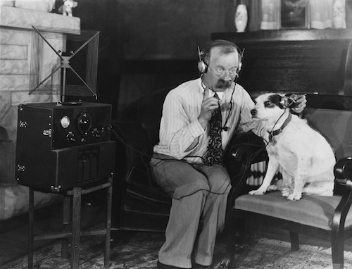
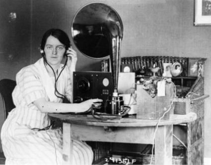

Got something you want to hear on this website? Drop us a line below.
PublicRadio.info is a homepage for listening to noncommercial news, culture, and arts.
Published by Open Source Media and made by volunteers. Help from Conor Gillies, Alex Silva, Liz Lovero, Rosie Busiakiewicz, Cait Gillies, Parker Fishel, Annie McEwen, Audrey Mardavich, Ellie McDowall, Eve Asher, Chris Kalafarski, and Kathy Tu. Graphics licensed under CC, software issued under MIT License. Email.
Support local and public media! Find your nearest NPR (U.S.) station. Here is our ad policy.
Listeners here: ?